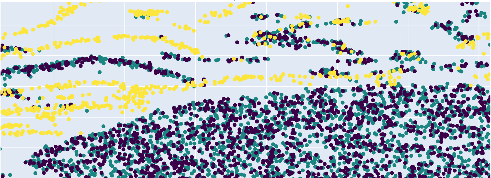
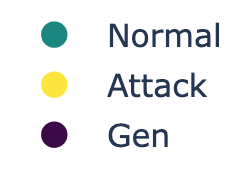
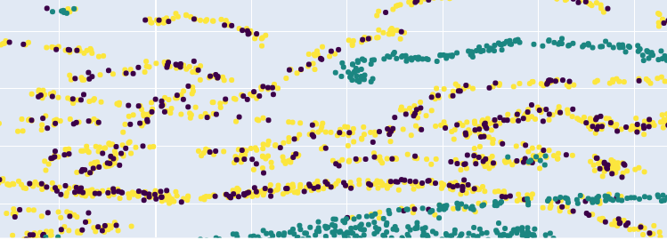

Applicazione che monitora continuamente la rete per identificare attività malevole.Intrusion Detection Systems (IDS)
Nell’ultimo decennio si è iniziato ad utilizzare algoritmi di Machine Learning per gli IDS.
La branca dell’Intelligenza Artificiale che sviluppa modelli per permettere alle macchine di imparare dai dati.Machine Learning

Generare nuovi dati a partire da quelli già esistenti per migliorare i modelli di Machine Learning
Cercare di migliorare un IDS utilizzando Soft-Brownian-Offset
Algoritmo di generazione di dati creato inizialmente per la generazione di eventi anomali.
Generazione a partire dalla tipologia di dati:
Per una valutazione qualitativa degli approcci di generazione.


Addestramento di XGBoost usando:
| Pacchetti normali + Gen | Dataset Completo + Gen | Solo Dataset | |
|---|---|---|---|
| Gen Normali | 0.3337 | 0.99839 | 0.99842 |
| Gen Attacchi | 0.4404 | 0.99865 | 0.99842 |
| Gen Completo | 0.3452 | 0.99854 | 0.99842 |
| Pacchetti normali + Gen | Dataset Completo + Gen | Solo Dataset | |
|---|---|---|---|
| Gen Normali | 0.3337 | 0.99839 | 0.99842 |
| Gen Attacchi | 0.4404 | 0.99865 | 0.99842 |
| Gen Completo | 0.3452 | 0.99854 | 0.99842 |
| Pacchetti normali + Gen | Dataset Completo + Gen | Solo Dataset | |
|---|---|---|---|
| Gen Normali | -0.1153 | 0.92772 | 0.93596 |
| Gen Attacchi | -0.1366 | 0.93428 | 0.93596 |
| Gen Completo | -0.1206 | 0.92493 | 0.93596 |
| Pacchetti normali + Gen | Dataset Completo + Gen | Solo Dataset | |
|---|---|---|---|
| Gen Normali | -0.1153 | 0.92772 | 0.93596 |
| Gen Attacchi | -0.1366 | 0.93428 | 0.93596 |
| Gen Completo | -0.1206 | 0.92493 | 0.93596 |
Soft Brownian Offset è efficace nel caso di dataset semplici. In dataset complessi invece l’algoritmo non presenta miglioramenti.
In quest’ultimo caso è necessario rivolgersi ad algoritmi differenti.